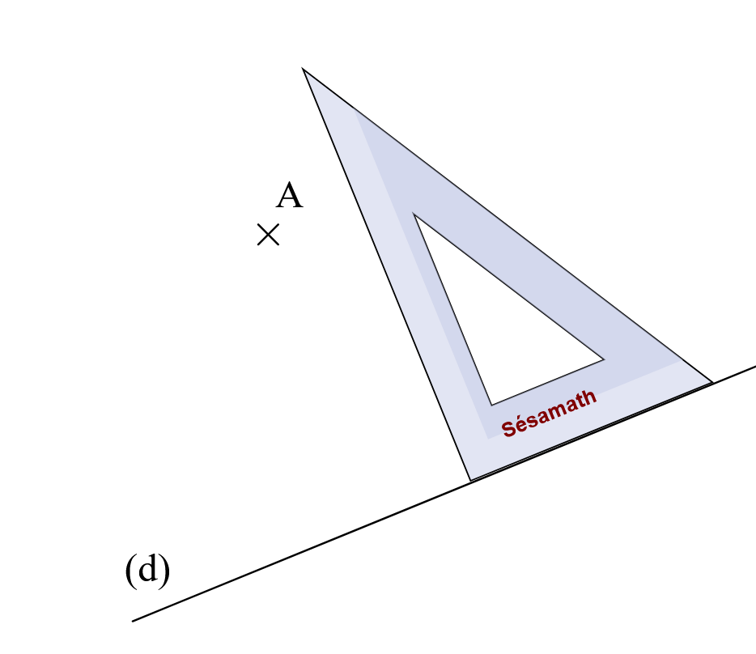
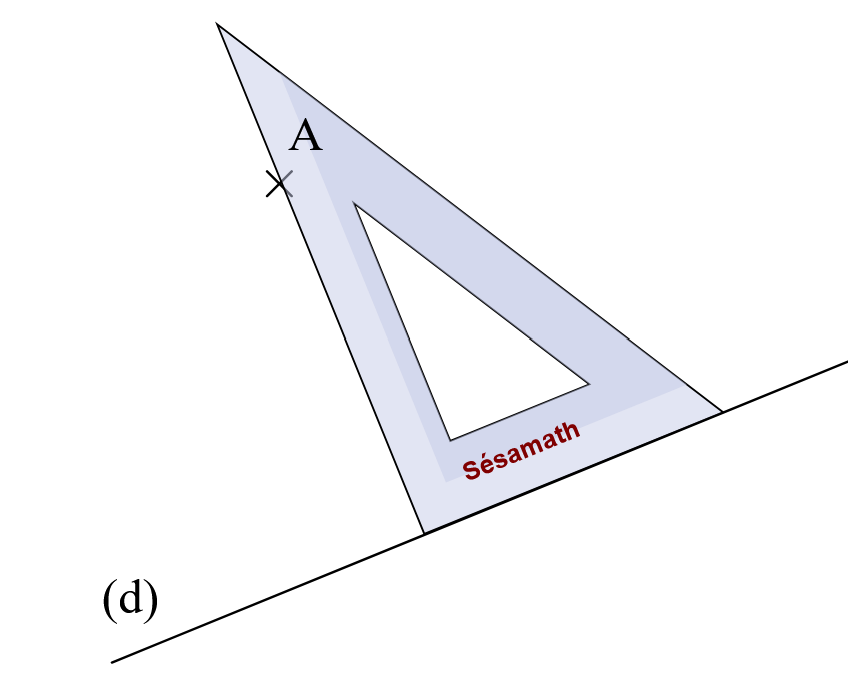
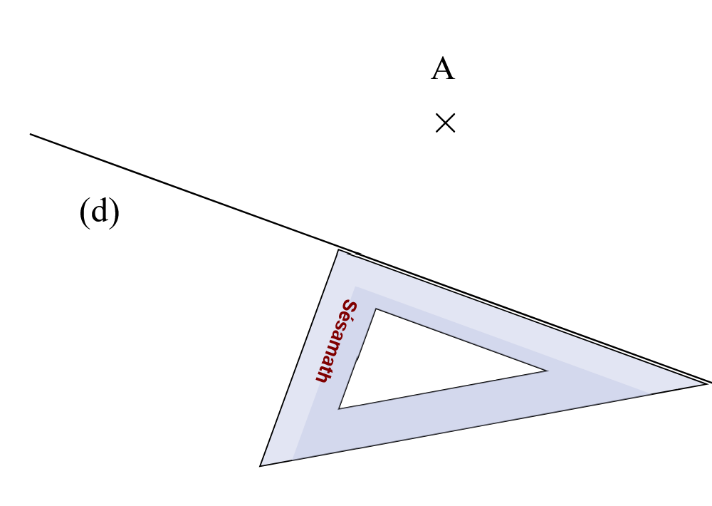
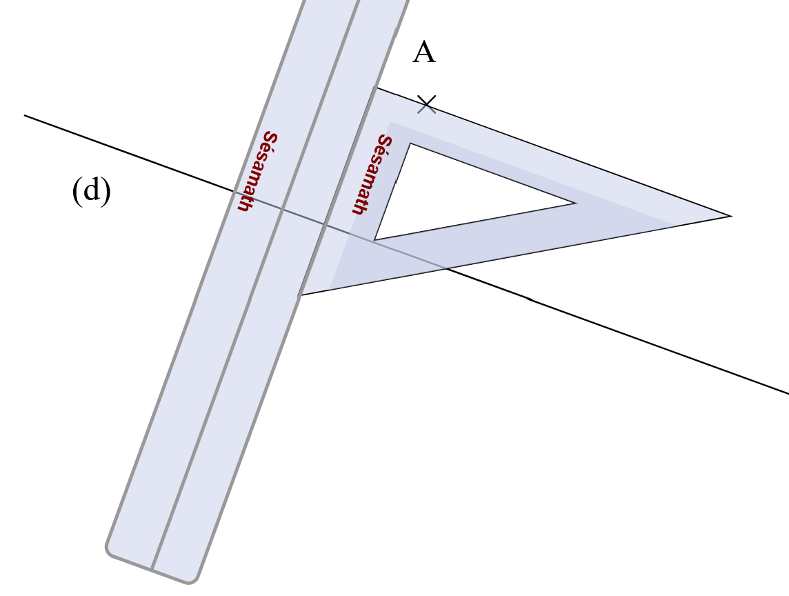
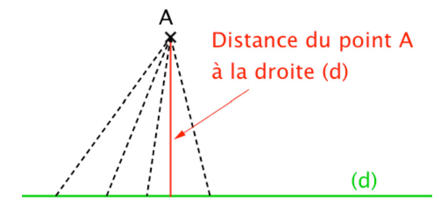
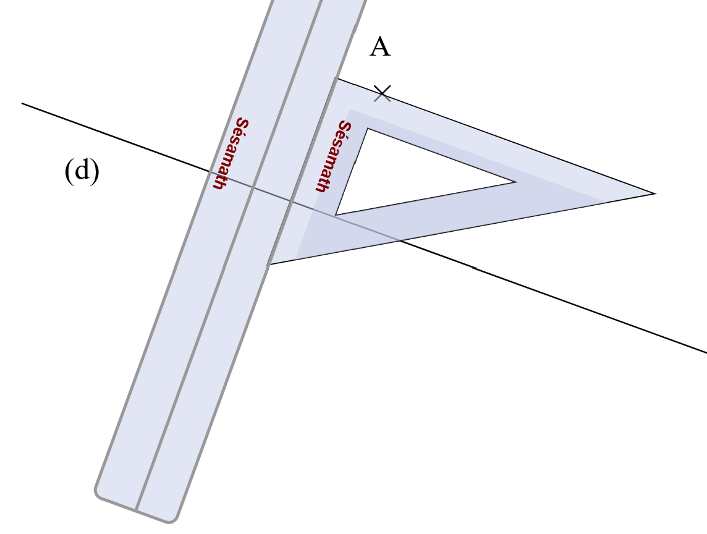
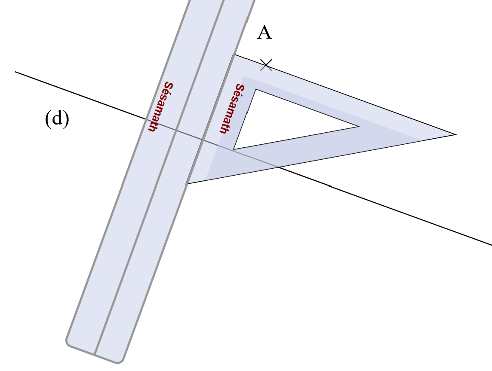

Chapitre 5 : Construire des droites parallèles et perpendiculaires
Rappels : Relations de perpendicularité et de parallélisme
Droites perpendiculaires
Définition : Deux droites sont perpendiculaires si elles sont sécantes et forment quatre angles droits (angles égaux).
Notation : Si les droites (d) et (d') sont perpendiculaires, on note (d) ⊥ (d').
Exemple :
Les droites (AB) et (CD) sont perpendiculaires en E. On note : (AB) ⊥ (CD)
On code l'angle droit par un petit carré à l'intersection.
Droites parallèles
Définition : Deux droites sont parallèles si elles ne sont pas sécantes.
Notation : Si les droites (d) et (d') sont parallèles, on note (d) // (d').
Exemple :
Construire une perpendiculaire
Vidéo : Construction de droites perpendiculaires
Construction avec une équerre
Méthode : Pour tracer la perpendiculaire à une droite (d) passant par un point A :
Placer un côté de l'angle droit de l'équerre le long de la droite (d)
Faire glisser l'équerre jusqu'à ce que l'autre côté de l'angle droit passe par le point A
Tracer la droite perpendiculaire en suivant ce côté de l'équerre

→

→→
Attention : Il faut bien vérifier que le sommet de l'angle droit de l'équerre est bien placé et que l'équerre ne bouge pas pendant le tracé.
Construire une parallèle
Vidéo : Construction de droites parallèles
Construction avec l'équerre et la règle
Méthode : Pour tracer une droite parallèle à (d) passant par un point A :
Placer un côté de l'angle droit de l'équerre le long de la droite (d)
Placer une règle le long de l'autre côté de l'équerre
Maintenir la règle fixe et faire glisser l'équerre le long de la règle jusqu'à ce que le premier côté passe par le point A
Tracer la droite parallèle à (d) en suivant ce côté de l'équerre

→→

→
Autre méthode : On peut aussi construire une parallèle en utilisant les perpendiculaires : tracer une droite (d₁) perpendiculaire à (d), puis tracer une droite perpendiculaire à (d₁) passant par A.
Distance d'un point à une droite
Définition de la distance
Définition : La distance d'un point à une droite est la longueur du plus petit segment reliant ce point à l'un des points de la droite.

Propriété : La distance d'un point A à une droite (d) est la longueur du segment reliant le point A au pied de la perpendiculaire à (d) passant par ce même point A.
Exemple :
Si H est le pied de la perpendiculaire à (d) passant par A, alors la distance de A à (d) est la longueur AH.
Pour tout autre point M sur (d), on a : AH < AM


 →
→

 →

→
→

→

 Si H est le pied de la perpendiculaire à (d) passant par A, alors la distance de A à (d) est la longueur AH.
Si H est le pied de la perpendiculaire à (d) passant par A, alors la distance de A à (d) est la longueur AH.